Antes de empezar
Para todos
CEP es un programa de control estadístico de procesos. En la planta se toman muestras cada cierto tiempo (por ejemplo, cinco envases cada 15 minutos) y se anotan sus mediciones o sus defectos. CEP guarda esas muestras, las compara con el comportamiento habitual del proceso y avisa cuando algo cambia.
Funciona en un solo computador y no necesita internet. Todos los datos quedan en ese equipo, en un único archivo.
Dos vistas para dos trabajos distintos
| Vista | Quién la usa | Para qué sirve |
|---|---|---|
| Operario | Personal de planta | Registrar las muestras, ver en palabras simples cómo va el proceso, atender las alertas y reportar problemas. |
| Ingeniería | Ingeniería de calidad, análisis o supervisión | Definir qué se controla, cargar datos, fijar los límites, analizar la capacidad, diseñar el muestreo, configurar las reglas y emitir informes. |
Se cambia de vista con los botones Operario e Ingeniería del encabezado. La vista Operario no usa términos técnicos y su menú nunca lleva a pantallas de Ingeniería.
Cómo leer este manual
- Los botones que se pulsan se ven así: Guardar muestra.
- Los textos que aparecen en pantalla van en cursiva: «El proceso va bien».
- Una ruta como Ingeniería›Plantilla de carga significa: elegir la vista Ingeniería y, en el menú de la izquierda, la pantalla Plantilla de carga.
- Las palabras con subrayado punteado muestran su definición al pasar el puntero.
- En las capturas, los círculos rojos numerados señalan partes de la pantalla. Al pasar el puntero sobre un círculo se resalta su explicación debajo, y al revés. Haz clic en una imagen para verla en grande.
Hay cuatro tipos de recuadros:
Información útil para entender lo que pasa.
Una forma de trabajar más rápido o con menos errores.
Algo que cambia el resultado si no se tiene en cuenta.
Una acción que afecta los datos o que no conviene hacer.
Instalar y abrir CEP
Para todos
Qué se necesita
- Windows 10 u 11 de 64 bits y unos 205 MB libres.
- Microsoft Edge WebView2, que ya viene en Windows 11 y en los Windows 10 actualizados.
- Opcional: MiKTeX, para que los informes PDF salgan con el formato LaTeX. Sin él, CEP genera el PDF con un formato alternativo y lo avisa.
Instalación
- Haz doble clic en CEP-Setup-1.0.0.exe. Se instala para tu usuario y no pide permisos de administrador.
- Si aparece «Windows protegió su PC», pulsa Más información y luego Ejecutar de todas formas.
- Sigue el asistente. Al terminar tendrás un acceso directo en el escritorio y otro en el menú Inicio.
Porque el instalador no tiene firma digital, algo que cuesta dinero y no hace falta para un programa de uso interno. El programa no se conecta a internet ni modifica nada fuera de su carpeta.
Abrir el programa
CEP se abre en su propia ventana, sin navegador. La primera vez puede tardar hasta un minuto mientras Windows lo revisa; las siguientes, unos segundos. Mientras tanto se ve una pantalla de carga.
Solo puede haber una ventana de CEP abierta. Si intentas abrir otra, verás el mensaje «CEP ya está abierto en este equipo. Busca su ventana en la barra de tareas». Al cerrar la ventana se cierra el programa.
La primera vez: base vacía
Al principio no hay procesos y la aplicación lo indica. Tienes dos caminos:
- Trabajar con tus datos: crea la primera variable en Ingeniería›Variables a controlar o arma directamente la plantilla de carga.
- Practicar con datos de ejemplo: en Ingeniería›Base de datos y respaldos pulsa Cargar demostración. Se carga un proceso de envasado y los ejemplos del libro de Montgomery.
Los datos de demostración permiten probar todo sin miedo a equivocarse. Cuando quieras empezar con tu proceso, vuelve la base a un respaldo vacío (ver Base de datos y respaldos).
Dónde quedan tus datos
Todo se guarda en C:\Users\<tu usuario>\CEP\, fuera de OneDrive:
| Archivo o carpeta | Qué contiene |
|---|---|
| cep.db | La base de datos: procesos, muestras, alertas e historial. |
| reportes\ | Los informes PDF y Excel generados. |
| respaldos\ | Copias de la base: una cada vez que abres el programa (se guardan las últimas 20). |
| registro.log | Registro técnico de errores, útil si hay que diagnosticar un problema. |
Si desinstalas o actualizas CEP, la carpeta CEP se conserva. Para empezar realmente de cero hay que volver a un respaldo vacío o borrar esa carpeta a mano.
Ideas clave
Para todos · sin fórmulas
Estas son las ideas que aparecen en todo el programa. Si las entiendes, el resto del manual se lee solo.
Proceso, variable y muestra
- Un proceso es la línea o máquina que se vigila, por ejemplo «Línea de Envasado L-04».
- Una variable es lo que se revisa en cada muestra. Puede ser una medición (un peso, un diámetro, una temperatura) o un conteo (cuántas unidades salieron malas, cuántas fallas tiene una pieza). Un proceso puede tener varias variables.
- Una muestra es el grupo de unidades que se revisa cada cierto tiempo, por ejemplo 5 envases seguidos. En la parte técnica también se llama subgrupo. Cada muestra tiene un número que no se repite: #1, #2, #3…
- Cuántas unidades tiene cada muestra y cada cuánto se toma forman el plan de muestreo.
Límites de control y valores aceptados
Son dos cosas distintas y conviene no confundirlas:
El rango en el que se mueve el proceso cuando funciona como siempre. Los calcula CEP a partir de los datos. En las gráficas son las líneas rojas; entre ellas está la zona normal.
Lo que exige el cliente, la norma o el plano: un mínimo, un máximo y un valor ideal. Los define el ingeniero. En las gráficas son las líneas grises punteadas.
Un proceso puede estar dentro de sus límites de control y aun así fabricar piezas fuera de lo aceptado (el proceso es estable, pero no es capaz). También puede pasar lo contrario: todas las piezas sirven, pero el proceso cambió y eso merece una revisión.
Las dos etapas: Fase I y Fase II
| Etapa | Qué se hace | Cómo se ve en CEP |
|---|---|---|
| Fase I conociendo el proceso | Se juntan 20 a 25 muestras tomadas en condiciones normales, se calculan límites provisionales y se descartan las muestras afectadas por causas conocidas. Al terminar, el ingeniero congela los límites. | Estado gris «Conociendo el proceso». |
| Fase II monitoreo | Cada muestra nueva se compara con los límites congelados. Si sale de lo normal o aparece un patrón extraño, se genera una alerta. | Estado verde, ámbar o rojo. |
Cómo detecta CEP que algo cambió
CEP no solo mira si un punto se sale de los límites. También busca patrones que, por azar, casi nunca ocurren en un proceso estable: muchos puntos seguidos del mismo lado, una subida constante, valores que se acercan al límite. Cada patrón es una regla de detección. Pruébalo: elige un patrón y mira qué puntos marcaría CEP.
- Qué se ve
- Qué significa
- En CEP
El estado del proceso
El encabezado y la vista Operario muestran siempre el estado con un color y una frase. Es lo primero que hay que mirar:
| Estado | Qué significa | Qué hacer |
|---|---|---|
| El proceso va bien | Fase II sin alertas pendientes. | Seguir tomando las muestras a tiempo. |
| Hay señales de que algo está cambiando. | Revisar la alerta, observar la máquina y anotar lo encontrado. | |
| Detener y avisar | El proceso se salió de lo normal, o hay una parada o un lote retenido. | Avisar al supervisor o al ingeniero antes de seguir y anotar en la alerta qué pudo pasar. |
| Conociendo el proceso | Fase I: los límites son provisionales. | Registrar las muestras como siempre. |
| Sin datos | La variable todavía no tiene muestras. | Registrar o cargar las primeras muestras. |
Conocer la pantalla
Para todos
Todas las pantallas comparten el mismo encabezado y un menú a la izquierda. Pasa el puntero sobre los números para ubicar cada parte.

- Proceso y variable activos. Al pulsarlo se elige otra variable; todas las pantallas pasan a mostrar esa. La lista incluye + Nueva variable…. CEP recuerda la última elegida.
- Operario / Ingeniería. Cambia de vista.
- Turno y carta. El turno en curso y, debajo, el tipo de gráfica, el tamaño de muestra y la etapa.
- Estado del proceso. El mismo color y frase de la tabla de estados.
- Campana. Cuántas alertas hay sin resolver; al pulsarla se abren las alertas.
- Usuario. Quién está usando el programa. Al pulsarlo se cambia. No hay contraseñas: el nombre sirve para dejar constancia de quién hizo cada registro.
- Menú. Las pantallas de la vista actual. Abajo, un recuadro con el plan de muestreo y cuándo toca la próxima muestra.
El resultado de cada acción aparece como un mensaje breve en la esquina inferior derecha (por ejemplo «Muestra #26 guardada»). Los errores dicen qué pasó y cómo arreglarlo. Las acciones importantes, como congelar límites o restaurar un respaldo, abren una ventana de confirmación que a menudo pide un motivo: ese motivo queda en el historial.
Si una acción necesita un nombre y no hay ninguno, CEP lo pide. Escribirlo al principio evita interrupciones y deja el historial ordenado.
Recorrido: de cero a monitorear
Para Ingeniería
El orden de trabajo para poner un proceso bajo control. Marca cada paso al terminarlo: el avance se guarda en este equipo.
Vista Operario
Para el personal de planta
Cuatro pantallas: Registrar muestra, Cómo va el proceso, Alertas e Historial de muestras. Todas muestran la variable elegida en el encabezado.
Registrar una muestra
Es la pantalla de inicio y la que más se usa.
- Estado y qué hacer. La frase dice qué hacer en ese momento.
- Próxima muestra. Cuenta regresiva hasta la siguiente; dice «¡Ahora!» cuando toca, o avisa si está atrasada.
- Reportar un problema. Para avisar de una parada, un lote retenido o algo raro.
- Formulario. Un campo por cada unidad de la muestra, más el lote (opcional).
- Guardar muestra. Registra la muestra y la compara con los límites.
- Últimas muestras. El promedio de cada muestra sobre la zona normal.
- Resumen. Unidades dentro de lo aceptado, promedio frente al ideal y muestras para revisar.
- Modo demostración. Solo aparece si el ingeniero lo activó.
Paso a paso
- Toma las unidades que indica la pantalla (por ejemplo, 5 unidades seguidas) y mídelas.
- Escribe cada valor en Unidad 1, Unidad 2… Puedes usar coma o punto decimal. La tecla Enter pasa al campo siguiente.
- Mientras escribes, debajo aparece el resultado en vivo: el promedio, si está dentro de lo normal y cuántas unidades quedaron fuera de lo aceptado.
- Si quieres, escribe el lote.
- Pulsa Guardar muestra.
En lugar de un campo por unidad, el formulario pide cuántas unidades se revisaron y cuántas salieron defectuosas (o cuántas fallas se encontraron).
Al guardarla se crea una alerta y el estado cambia de color. No borres ni cambies valores para que la alerta desaparezca: anota en la alerta qué pasó (ver Alertas).
Cuando un valor parece mal escrito
Si un valor está muy lejos de lo habitual, por ejemplo 5000 en lugar de 500,0, CEP pregunta antes de guardar.

Deshacer la última muestra
Durante los 10 minutos siguientes a guardar aparece el recuadro «¿Te equivocaste en la muestra #25? Puedes deshacerla durante 09:25» con el botón Deshacer. Al usarlo:
- se pide un motivo opcional, por ejemplo «Error al escribir un valor»;
- la muestra no se borra: queda anulada en el historial, con el motivo;
- sus valores vuelven al formulario para corregirlos y guardarlos otra vez.
Avisa al ingeniero. Mientras el proceso está en Fase I, puede excluir esa muestra indicando la causa.
Alertas y resumen del turno
Más abajo, en la misma pantalla, están las alertas del turno con su botón Anotar qué pasó y el resumen «Este turno»: muestras tomadas frente a las programadas, unidades dentro de lo aceptado, alertas y quién registra.
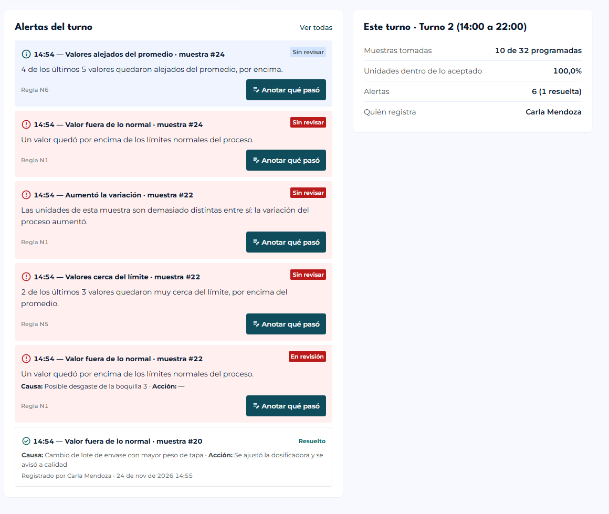
Si el ingeniero lo activó, aparece Completar con valores simulados con una lista para elegir el comportamiento (normal o con un corrimiento). Sirve para mostrar la aplicación sin datos reales y debe desactivarse al trabajar con un proceso real.
Cómo va el proceso
La misma gráfica en grande, con una guía para leerla y la lista de muestras que conviene revisar.

- La gráfica. Cada punto es el promedio de una muestra; la línea del medio es el promedio habitual.
- Zona normal. La franja sombreada entre las líneas rojas. Un punto fuera de ella genera una alerta.
- Valores aceptados. Las líneas grises punteadas: lo que exige el cliente.
- Punto para revisar. Rojo y con «!» encima.
- Cómo leer la gráfica. La guía, siempre visible.
- Muestras para revisar. Cada una con la razón en palabras.
- Resumen. Unidades dentro de lo aceptado, promedio y muestras para revisar.
Alertas
Todas las alertas de la variable, con su explicación y su seguimiento.

- Filtros. Sin resolver, Resueltas o Todas.
- Todas las variables. Muestra las alertas de todos los procesos.
- Reportar un problema.
- Contadores. Sin resolver, graves sin resolver, en revisión y resueltas.
- La alerta. Hora, qué pasó, número de muestra y explicación en palabras. En letra pequeña, el código de la regla para el ingeniero.
- Estado. Sin revisar, En revisión o Resuelto.
- Anotar qué pasó. Para registrar la causa y la acción.
Anotar qué pasó
- Pulsa Anotar qué pasó en la alerta.
- Escribe ¿Qué lo causó? si lo sabes, y ¿Qué se hizo?.
- Elige el estado: Sin revisar, En revisión o Resuelta.
- Pulsa Guardar.
Una alerta solo se marca como resuelta si tiene las dos. Si todavía no se sabe la causa, déjala En revisión.
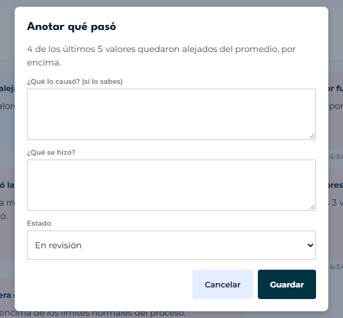
Lo que anotes aparece después en las gráficas de Ingeniería y en los informes: es la memoria del proceso.
Reportar un problema
El botón Reportar un problema crea una alerta manual. Eliges ¿Qué pasó? (Se detuvo el proceso, Retuve un lote o Vi algo raro) y lo describes brevemente.
Hasta que la alerta se resuelva, el proceso muestra Detener y avisar.
Historial de muestras
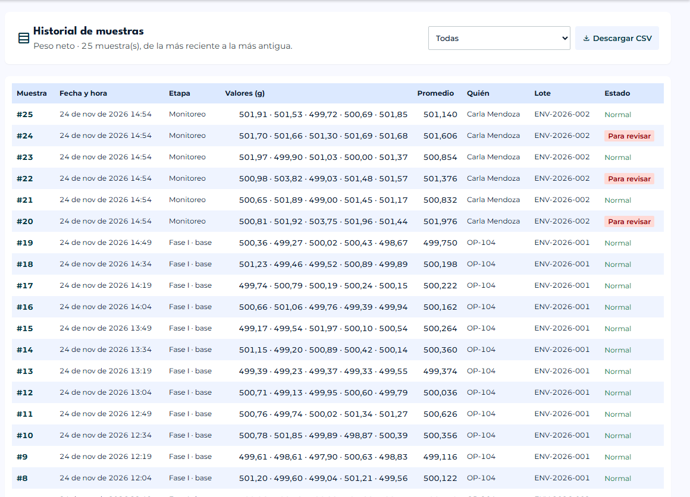
Cada fila muestra la fecha y hora, la etapa, los valores, el promedio, quién la registró, el lote y si quedó Normal o Para revisar. La lista desplegable filtra por etapa: Todas, Conociendo el proceso (Fase I), Monitoreo (Fase II), Archivadas y Anuladas. Descargar CSV guarda la tabla en un archivo que se abre con Excel.
Ingeniería: preparar el control
Para Ingeniería
Antes de analizar hay que decir qué se controla y cargar las muestras. Estas tres pantallas lo resuelven.
Variables a controlar
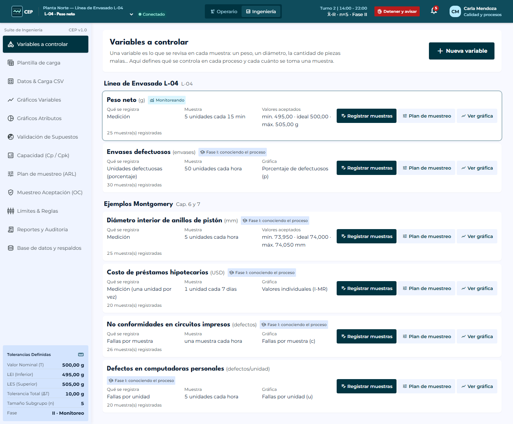
Cada tarjeta dice qué se registra, el plan de muestreo, los valores aceptados o el tipo de gráfica, la etapa y cuántas muestras tiene. Sus botones llevan a Registrar muestras, al Plan de muestreo y a Ver gráfica.
Solo si no tiene muestras: en ese caso aparece el botón Eliminar. Las variables con datos no se eliminan, para no perder la trazabilidad.
Crear una variable con el asistente
- Proceso. Elige el proceso o Otro proceso (crear uno nuevo).
- Qué se registra. Nombre, unidad y cómo se registra cada unidad: la mido, la clasifico buena o mala o cuento sus fallas.
- Muestreo. Unidades por muestra y cada cuánto. El asistente recomienda la gráfica y explica por qué.
- Especificaciones. Mínimo, ideal y máximo aceptados (pueden quedar vacíos) y los decimales.
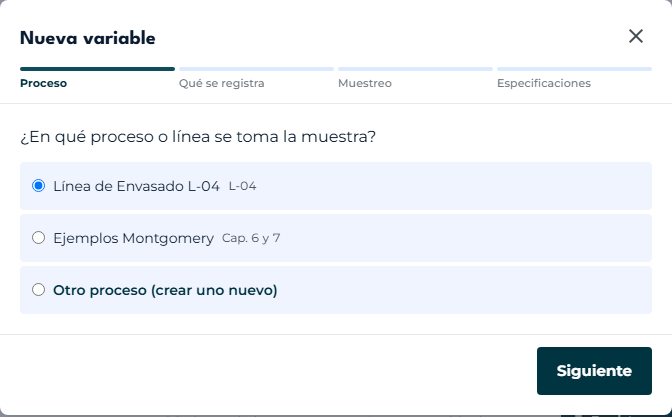
Plantilla de carga
La forma recomendada de cargar datos. CEP genera un Excel a la medida del proceso, se llena (en el computador o impreso, a mano) y se vuelve a subir. El Excel no deja escribir datos inválidos y la carga muestra un informe antes de guardar.
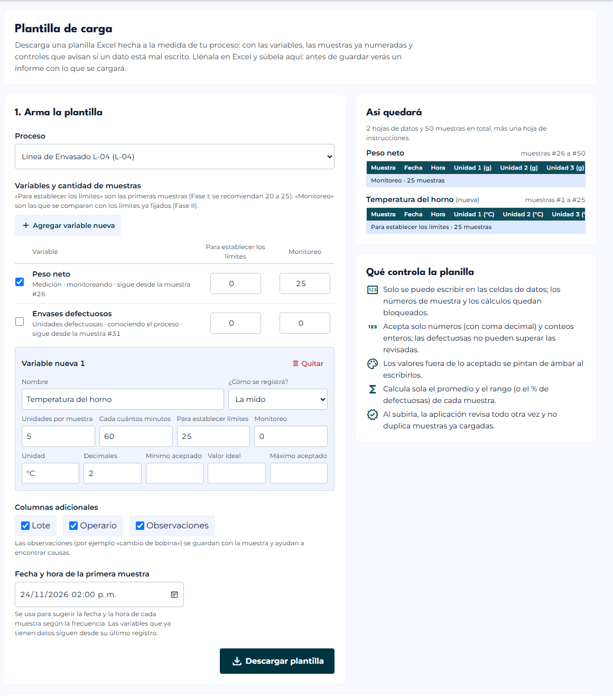
- Proceso. El proceso de la plantilla, o uno nuevo.
- Variables. Marca las que tendrá la plantilla.
- Para establecer los límites. Cuántas muestras de Fase I (se recomiendan 20 a 25).
- Monitoreo. Cuántas muestras de Fase II.
- Variable nueva. Con Agregar variable nueva se definen variables que aún no existen; se crean al subir la plantilla.
- Columnas adicionales. Lote, operario y observaciones.
- Primera muestra. Con la fecha y la frecuencia, la plantilla sugiere la fecha y hora de cada muestra.
- Descargar plantilla.
- Así quedará. Vista previa de cada hoja.
Qué trae el Excel
- Una hoja de instrucciones y una hoja por variable, con las muestras numeradas, fecha y hora sugeridas y una columna por unidad.
- Solo se escribe en las celdas de datos; números de muestra y cálculos están protegidos (sin contraseña).
- Acepta solo números con coma decimal y conteos enteros; las defectuosas no pueden superar las revisadas.
- Los valores fuera de lo aceptado se pintan de ámbar al escribirlos.
- Calcula solo el promedio y el rango (o el % de defectuosas) de cada muestra, y está lista para imprimir en horizontal.
Subir la plantilla llenada
En 2. Sube la plantilla llenada, arrastra el archivo o haz clic para elegirlo. Antes de guardar nada, CEP muestra un informe de revisión:
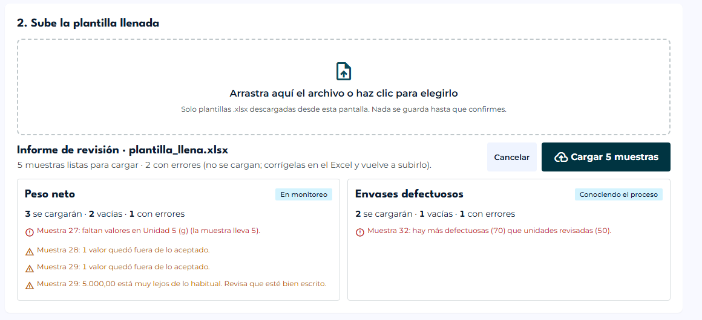
Con Cargar N muestras se guardan las muestras válidas; con Cancelar no se guarda nada. Si hay errores, corrígelos en el Excel y vuelve a subirlo.
Mientras la variable está en Fase I, solo entran las muestras de Para establecer los límites; las de monitoreo quedan pendientes y el informe lo avisa. Después de congelar los límites, sube el mismo archivo otra vez: las ya cargadas no se duplican y ahora entran las de monitoreo.
Mientras se va llenando, cada subida carga solo lo nuevo: las filas vacías se ignoran y las muestras ya cargadas no se repiten. Cada carga queda en el historial con el nombre del archivo y su huella SHA-256.
Datos y carga CSV
Para importar archivos que ya existen (CSV, TXT, DAT o Excel), por ejemplo los que exporta otro sistema. Si los datos todavía no existen, conviene más la plantilla.

- Pulsa Cargar Nuevo Dataset o arrastra el archivo. El delimitador, la codificación y los encabezados se detectan solos.
- En Motor de Mapeo de Columnas, revisa el rol de cada columna: fecha y hora, identificador de subgrupo, valor, operario, lote o ignorar. Si cada fila es una muestra con sus valores en varias columnas, todas llevan el rol de valor.
- Elige la Variable de destino y, si el archivo no tiene columna de subgrupo, el tamaño n: las filas se agrupan de a n en orden.
- Elige cómo tratar los faltantes (Descartar fila incompleta, Imputar por media de subgrupo o Alerta estricta) y los atípicos (Regla Tukey 1.5×IQR, Umbral 3σ o Sin filtro).
- Revisa las pestañas Primeras filas, Subgrupos formados e Informe de limpieza, y el resumen descriptivo.
- Pulsa Guardar Mapeo e Importar a la Variable.
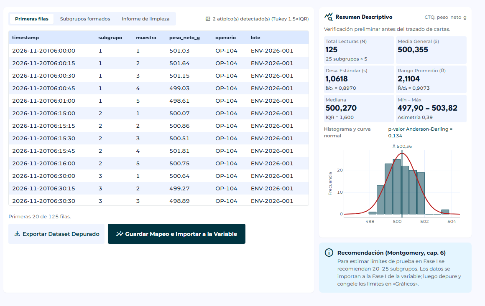
Los datos importados entran en la Fase I. Si la variable ya está en Fase II, la pantalla dice «no admite importación»: usa la plantilla o la vista Operario.
Ingeniería: analizar
Para Ingeniería
Aquí se fijan los límites, se revisa que los datos sean adecuados y se mide si el proceso cumple.
Gráficos por variables
La pantalla central del análisis para las variables que se miden.

- Etapa. Fase I o Fase II, y si los límites son provisionales o están congelados.
- Tipo de gráfica. X̄-R, X̄-S o I-MR. Solo se cambia en Fase I.
- Congelar límites. En Fase II, este botón dice Volver a Fase I.
- Exportar gráficos como imagen y abrir el reporte técnico.
- Tarjetas. Línea central y límites de cada gráfica, constantes usadas y σ estimada.
- Diagnóstico. Cuántos puntos tienen señal; Auditar lleva al primero.
- Gráfica de promedios. Con las franjas a 1 y 2 σ que usan algunas reglas.
- Gráfica de dispersión (R, S o MR): cuánto varían las unidades dentro de cada muestra.
- Auditoría de reglas. Cuántas veces se cumplió cada regla y en qué muestras; cambia entre WE (4) y Nelson (8).
- Índices de capacidad. Resumen; Estudio completo abre la pantalla de capacidad.
Fase I: depurar las muestras
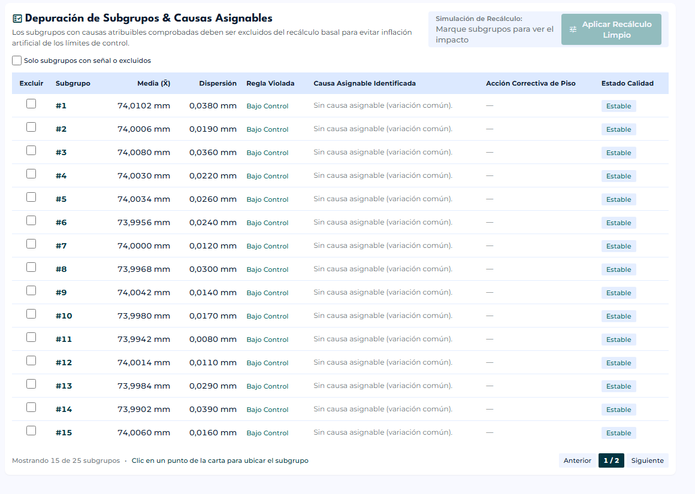
- Solo con señal. Acorta la lista a las muestras con señal o excluidas.
- Excluir. Marca las muestras con causa conocida.
- Simulación. Cómo cambiarían los límites y el Cpk antes de confirmar.
- Aplicar recálculo limpio. Pide la causa (obligatoria) y la acción de cada muestra excluida.
- Causa y acción registradas.
- Marca Excluir en las muestras afectadas por una causa conocida: un ajuste de máquina, un error de medición, una materia prima distinta.
- Mira la Simulación de Recálculo: cuánto cambian el límite superior y la línea central, el Cpk antes y después, y si quedarían señales.
- Pulsa Aplicar Recálculo Limpio y escribe la causa de cada muestra.
- Repite hasta que no queden señales sin explicación.
No excluyas muestras solo porque salen fuera de los límites. Si se excluyen sin motivo, los límites quedan más estrechos que la variación real del proceso y después aparecerán falsas alarmas.
Congelar los límites
Con la Fase I depurada, pulsa Congelar Límites → Fase II. La ventana indica con cuántas muestras se fijarán y pide un motivo. CEP advierte si quedan puntos con señal o si hay menos de 20 muestras, pero permite continuar. Desde ese momento, cada muestra nueva se compara con estos límites y la vista Operario muestra el estado en verde, ámbar o rojo.
Fase II: monitoreo
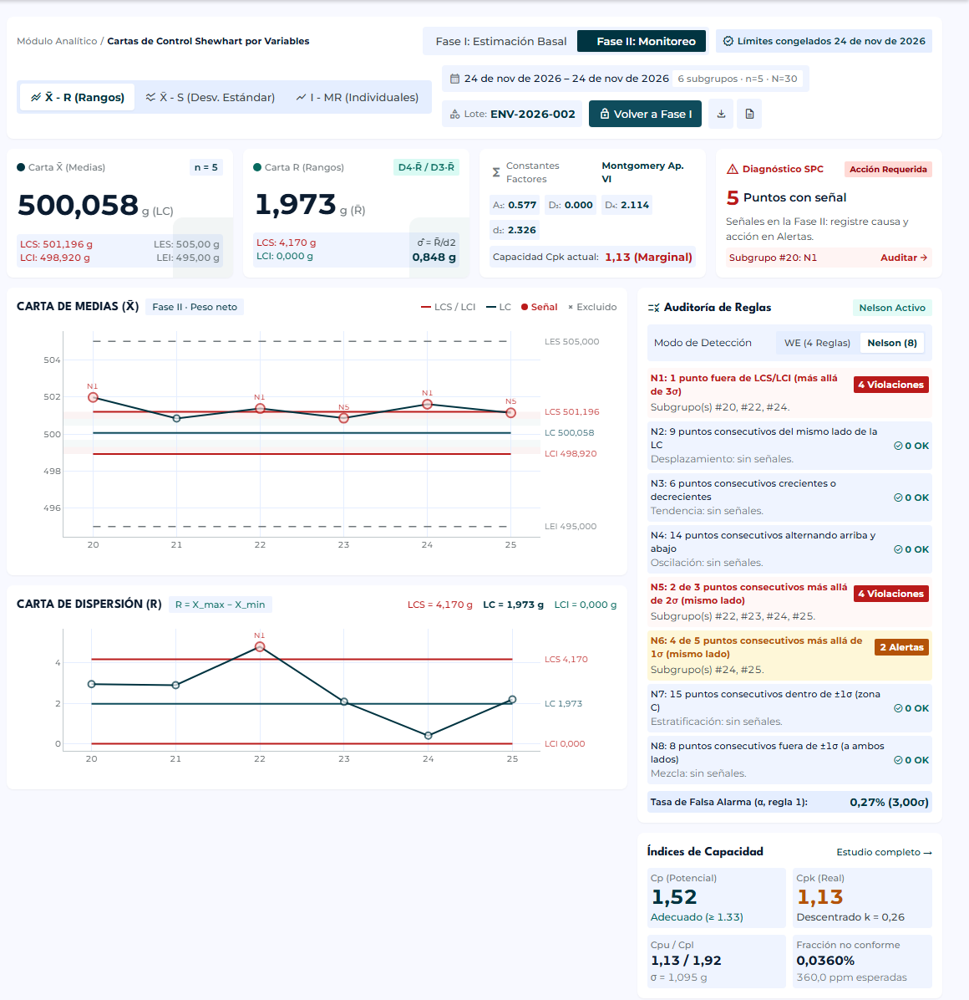
En esta etapa las muestras no se excluyen: las señales se atienden desde las alertas. La tabla Señales de Fase II muestra la causa y la acción anotadas en cada alerta y su estado.
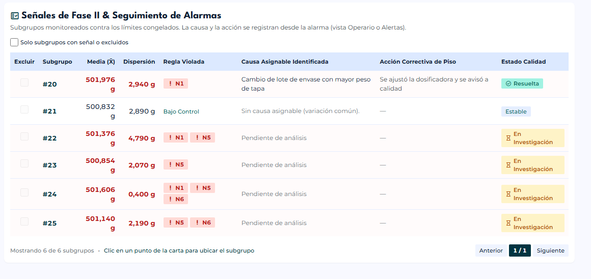
Volver a la Fase I
Si el proceso cambió de forma permanente (máquina nueva, otro proveedor, otro método), pulsa Volver a Fase I. Se pide un motivo y se elige la nueva base: conservar la anterior (las muestras de Fase II se archivan) o usar las de Fase II. Los límites anteriores quedan en el historial.
Gráficos por atributos
Funciona igual que la pantalla anterior, para las variables que se cuentan.
| Gráfica | Cuándo se usa |
|---|---|
| p | Porcentaje de unidades defectuosas; el tamaño de muestra puede variar. |
| np | Cantidad de unidades defectuosas, con tamaño de muestra constante. |
| c | Cantidad de fallas por muestra, cuando la muestra es siempre igual. |
| u | Fallas por unidad, cuando el tamaño de la muestra cambia. |
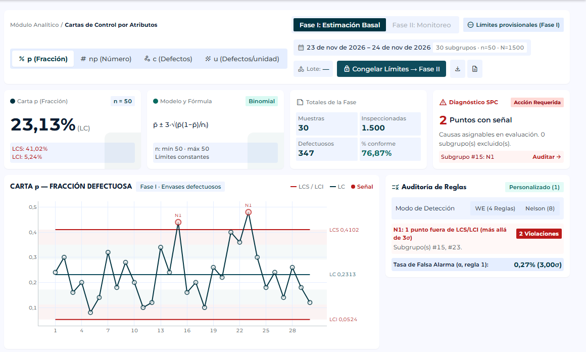
Al final de la pantalla, un asistente responde qué gráfica usar con tres preguntas: qué se registra, si el tamaño de muestra es constante y si se prefiere ver una proporción o un conteo.
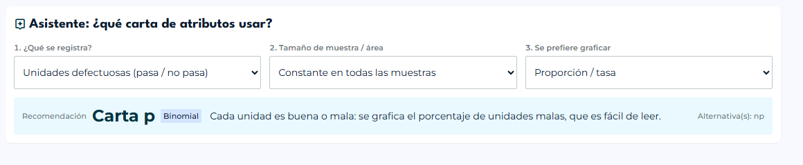
Validación de supuestos
Las gráficas de control dan por hecho que las mediciones siguen aproximadamente una distribución normal y que cada una no depende de la anterior. Esta pantalla lo comprueba.

- Controles: los datos a analizar (automático, Fase I o Fase II) y el nivel de significancia α (0,01, 0,05 o 0,10).
- Veredicto: una frase en verde si todo se cumple o en ámbar si hay observaciones.
- Normalidad: Anderson-Darling, Shapiro-Wilk y Lilliefors, cada una con su p-valor y la etiqueta Conforme o Rechaza H0.
- Gráfico Q-Q: si los puntos siguen la recta dentro de las bandas, los datos son compatibles con la normal.
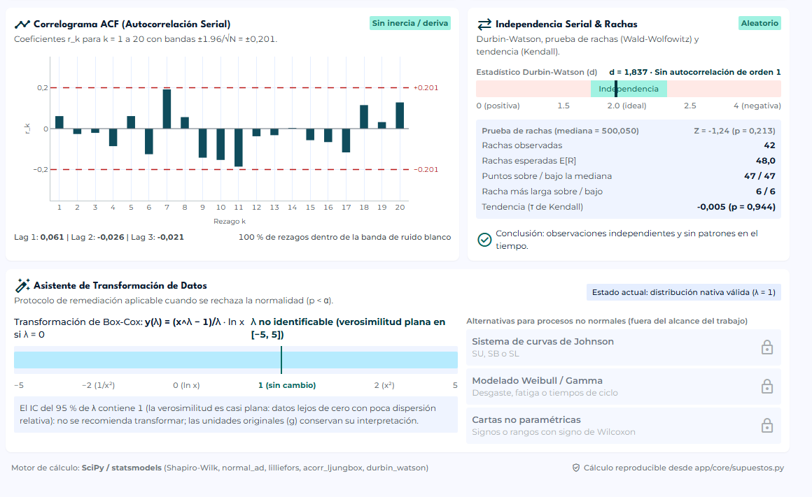
- Independencia: en el correlograma, las barras deben quedar dentro de las líneas rojas. Durbin-Watson cerca de 2 indica independencia.
- Aleatoriedad: prueba de rachas y tendencia por τ de Kendall.
- Box-Cox: si la normalidad se rechaza, indica qué transformación la corregiría. Si el intervalo incluye 1, no conviene transformar.
Si el instrumento mide con poca resolución (por ejemplo, gramos enteros), muchos valores se repiten y las pruebas pueden rechazar la normalidad aunque el proceso sea normal; en el gráfico Q-Q se ven escalones. Revisa entonces si los datos son simétricos y si el Q-Q sigue la recta en general. La gráfica X̄ trabaja con promedios y es poco sensible a este efecto.
Capacidad del proceso
Responde una pregunta concreta: ¿el proceso cumple lo que pide el cliente? Requiere que la variable tenga mínimo, máximo o ambos.

- Cómo se estima σ. Con los rangos, las desviaciones, los rangos móviles o la σ fijada por el ingeniero.
- Datos. Automático usa la Fase II si tiene al menos 20 muestras; si no, la Fase I.
- Veredicto. Capaz, marginal o no capaz, en una frase.
- Cp. Cuánto cabe la variación en la tolerancia, si el proceso estuviera centrado.
- Cpk. Lo mismo, considerando dónde está el promedio.
- Cpu y Cpl. Cada lado por separado.
- Fracción no conforme. Esperada (en % y piezas por millón) y observada.
- Histograma con mínimo, máximo, promedio y curva normal.
- Producto fuera de especificación por debajo y por encima.
- Conclusiones automáticas para revisar.
| Cpk | Veredicto | Qué significa |
|---|---|---|
| 1,33 o más | Capaz | El proceso cumple con margen. |
| Entre 1,00 y 1,33 | Cumple, pero cualquier cambio puede sacar piezas de especificación. | |
| Menos de 1,00 | No capaz | Se fabrica producto fuera de lo aceptado aunque el proceso esté estable. |
Si el proceso tiene señales sin resolver, CEP advierte que los índices no son confiables. Atiende las alertas o depura la Fase I antes de interpretarlos.
Detalle técnico
Cp = (LES − LEI) / 6σ; Cpu = (LES − μ) / 3σ; Cpl = (μ − LEI) / 3σ; Cpk = mín(Cpu, Cpl). La fracción esperada supone distribución normal; por eso conviene compararla con la observada y revisar los supuestos. Para variables por atributos, la capacidad se expresa como el nivel medio de defectos.
Ingeniería: planificar y decidir
Para Ingeniería
Plan de muestreo
Ayuda a decidir cuántas unidades revisar y cada cuánto, buscando equilibrio entre detectar rápido los problemas, evitar las falsas alarmas y no recargar al personal.
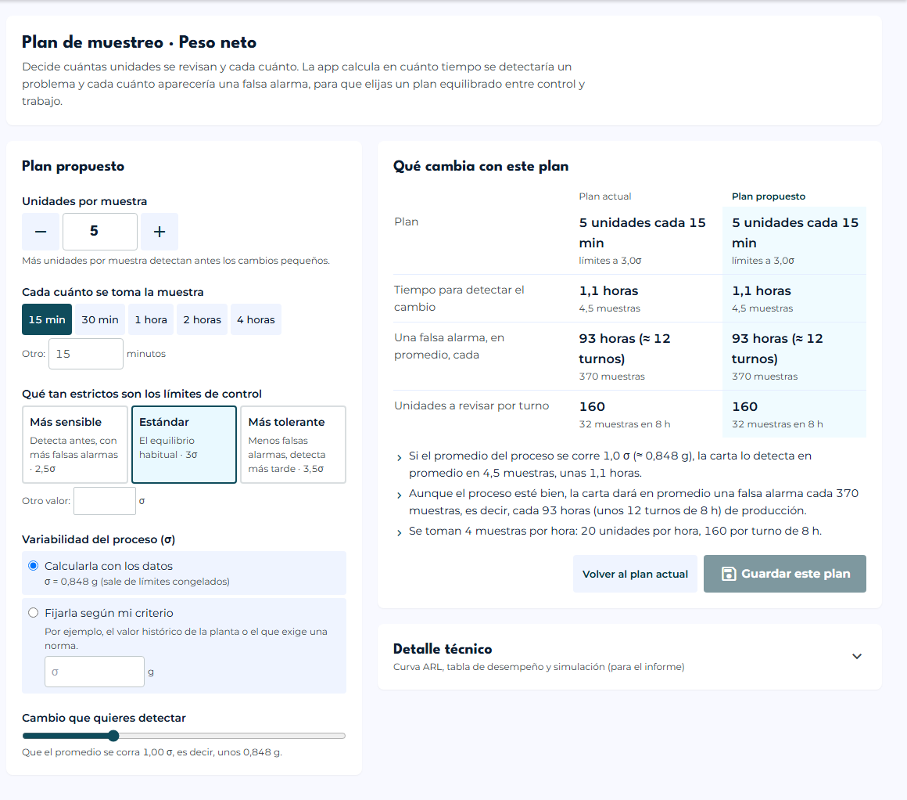
- Unidades por muestra. Con − y +. Más unidades detectan antes los cambios pequeños.
- Cada cuánto. 15 min, 30 min, 1, 2 o 4 horas, u otro valor.
- Qué tan estrictos son los límites. Más sensible (2,5σ), estándar (3σ) o más tolerante (3,5σ).
- Variabilidad (σ). Calculada con los datos o fijada según el criterio del ingeniero.
- Cambio a detectar. El tamaño del corrimiento del promedio que interesa.
- Comparación. Tiempo para detectar, frecuencia de falsas alarmas y unidades por turno.
- Explicación en palabras de lo que significa el plan.
- Guardar este plan. Pide un motivo y lo aplica.
- Detalle técnico. Curva ARL, tabla de desempeño y simulación.
Busca un plan que detecte el cambio que te importa en un tiempo razonable (por ejemplo, menos de un turno) sin dar falsas alarmas a cada rato y sin que revisar unidades se coma el tiempo del personal.
Los límites se recalculan con el centro y la σ congelados. Si cambia el número de unidades por muestra, las muestras de monitoreo tomadas con el tamaño anterior pasan al archivo, porque ya no son comparables con los límites nuevos.
Detalle técnico: ARL y ATS
El ARL es el número medio de muestras hasta que la gráfica da una señal. Con el proceso estable (ARL₀) conviene que sea alto: pocas falsas alarmas. Con el proceso corrido (ARL₁) conviene que sea bajo: detección rápida. El ATS es lo mismo expresado en tiempo (ARL × intervalo entre muestras). Para gráficas de atributos, CEP calcula el ARL exacto con la distribución binomial o de Poisson.
Muestreo de aceptación
Para decidir si se acepta o se rechaza un lote (por ejemplo, de materia prima) revisando solo una muestra. El plan es simple: se revisan n unidades y se acepta el lote si hay como máximo c defectuosas.

- Identifica el lote (código y descripción) y escribe el tamaño del lote N, la muestra n, el número de aceptación c, el AQL y el LTPD.
- O deja que CEP lo diseñe: escribe los riesgos α y β en Diseñar plan y pulsa Calcular n y c.
- Revisa la curva OC (probabilidad de aceptar según la calidad del lote), la AOQ (calidad media que sale) y la ATI (unidades inspeccionadas por lote).
- Al inspeccionar, indica los defectuosos hallados con − y +: CEP muestra el dictamen, la fracción estimada y su intervalo de confianza.
- Pulsa Registrar Dictamen del Lote para guardarlo en el historial de lotes.
Los botones Severa y Reducida aparecen desactivados: quedan fuera del alcance de esta versión.
Ingeniería: configurar, informar y respaldar
Para Ingeniería
Límites y reglas
La configuración de la variable activa y el historial de todos sus cambios.

- Revisión vigente: el número de versión (REV v2), si los límites están congelados y la huella SHA-256 de la configuración.
- Especificaciones: mínimo, ideal y máximo; para una especificación de un solo lado se deja vacío el otro. También el nombre, la unidad y los decimales.
- Muestreo y límites: tipo de gráfica, tamaño de muestra, frecuencia, ancho de los límites y estimador de σ.
Al cambiar algo, el botón de arriba pasa de Sin cambios pendientes a Guardar nueva revisión, que pide una justificación.
Con los límites congelados, el tamaño de muestra, k y σ se cambian desde el plan de muestreo, que recalcula los límites. El tipo de gráfica y el estimador de σ solo se cambian volviendo a la Fase I.
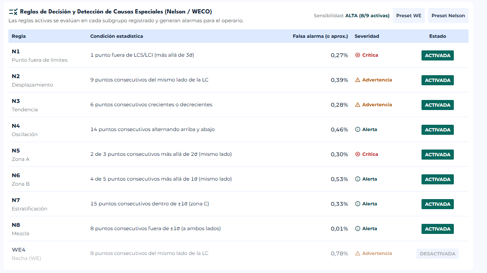
Las reglas se activan una a una o con Preset WE (4 reglas) y Preset Nelson (8 reglas). Las gráficas de dispersión solo evalúan la regla N1.

- Historial de cambios: fecha, usuario, parámetro, valor anterior y nuevo, justificación y versión. Se filtra y se descarga con Exportar Historial (CSV).
- Turnos de trabajo: nombre, inicio y fin de cada turno; los usa el resumen del turno del operario.
- Modo demostración: muestra u oculta el botón de valores simulados en la vista Operario.
Reportes
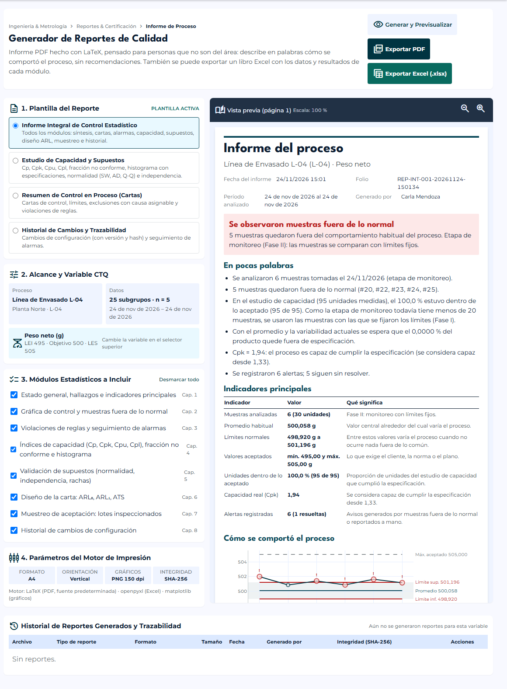
- Plantilla del reporte. Integral, Capacidad y supuestos, Control en proceso o Trazabilidad.
- Alcance. El proceso y la variable (se cambia en el encabezado).
- Módulos a incluir. Marca o desmarca capítulos.
- Generar y previsualizar. Muestra la primera página.
- Exportar PDF.
- Exportar Excel.
- Vista previa.
- Historial de reportes. Descargar otra vez y verificar.
- Elige la plantilla del reporte y revisa el alcance.
- Marca los módulos que quieres incluir.
- Pulsa Generar y Previsualizar.
- Pulsa Exportar PDF o Exportar Excel (.xlsx) y elige dónde guardarlo. Además queda una copia en la carpeta reportes.
Cómo es el informe PDF
Está escrito para lectores que no son del área y solo describe lo que pasó, sin recomendaciones: el estado en una frase, un resumen «En pocas palabras», los indicadores con su significado, la gráfica con una guía de lectura, las muestras fuera de lo normal, el cumplimiento de la especificación, la verificación de los datos, el plan de muestreo, las alertas, los lotes, el historial de cambios, un anexo técnico y un glosario.

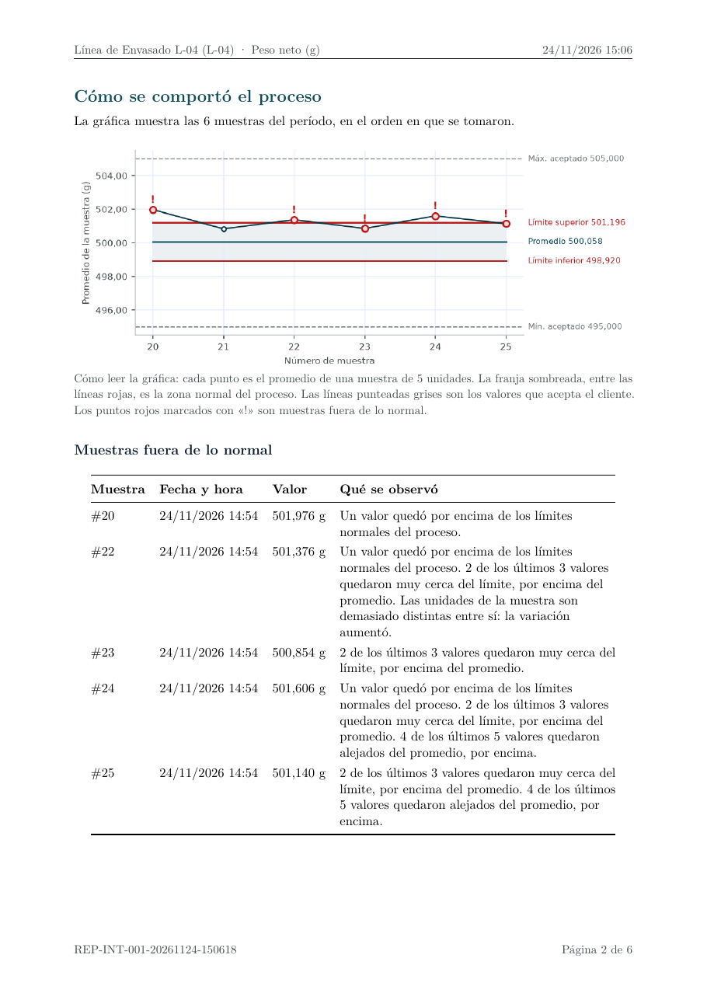
Si el equipo no tiene MiKTeX, el PDF se genera con un formato alternativo con los mismos textos y la pantalla lo avisa. El libro Excel tiene una hoja por sección con los datos y resultados numéricos.
En el historial de reportes, la verificación recalcula la huella SHA-256 del archivo y la compara con la registrada al generarlo. Si alguien cambió el archivo, no coincide.
Base de datos y respaldos

- Tus datos: cuántos procesos, variables y muestras hay, dónde está la base y su tamaño.
- Respaldar ahora guarda una copia. Además, CEP hace una cada vez que se abre (se guardan las últimas 20).
- Descargar una copia guarda la base completa en un archivo .db, para archivarla o llevarla a otro equipo.
- En la lista de respaldos, cada copia se descarga o se recupera con Volver a este.
- Elegir archivo .db reemplaza todos los datos por los de una copia descargada antes.
- Cargar demostración aparece solo con la base vacía.
La base vuelve completa al estado de esa copia: se pierde lo registrado después, en todos los procesos. Antes de hacerlo, CEP guarda una copia de la base actual que aparece en la misma lista, así que siempre se puede deshacer.
En el equipo de origen, Descargar una copia. En el de destino, con CEP instalado, Elegir archivo .db.
Problemas frecuentes
Para todos
Pulsa una pregunta para ver la respuesta.
Escribí mal un valor y ya guardé la muestra.
Durante 10 minutos, usa Deshacer en Registrar muestra. Pasado ese plazo, avisa al ingeniero: en Fase I puede excluirla indicando la causa.
La próxima muestra aparece «atrasada».
Ya pasó el tiempo de la frecuencia desde la última muestra. Regístrala, o pide al ingeniero que revise la frecuencia en el plan de muestreo.
El estado está en rojo y no sé por qué.
Abre Alertas: las graves sin resolver (puntos fuera de los límites, valores cerca del límite, paradas o lotes retenidos) ponen el estado en rojo. Anota la causa y la acción y márcalas como resueltas.
Subí la plantilla y las muestras de monitoreo no se cargaron.
Es lo esperado mientras la variable está en Fase I. Congela los límites en Gráficos y vuelve a subir el mismo archivo.
Quiero cambiar el tipo de gráfica y no me deja.
El tipo de gráfica y el estimador de σ solo se cambian en Fase I. Si los límites ya están congelados, primero usa Volver a Fase I.
No puedo eliminar una variable.
Solo se eliminan variables sin muestras, para no perder la trazabilidad.
Quiero quitar todo lo que cargué.
En Base de datos y respaldos, usa Volver a este en un respaldo anterior a la carga. Ten en cuenta que afecta a todos los procesos.
La validación de supuestos rechaza la normalidad.
Revisa si los datos están redondeados (escalones en el gráfico Q-Q) y si son simétricos. Ver el recuadro «Datos redondeados» en Validación de supuestos.
La capacidad dice que los índices no son confiables.
El proceso tiene señales sin resolver. Atiende las alertas o depura la Fase I antes de interpretar los índices.
El PDF dice que se usó el formato alternativo.
El equipo no tiene LaTeX. Instala MiKTeX si quieres ese formato; el contenido es el mismo.
Windows muestra «Windows protegió su PC» al instalar.
Pulsa Más información y Ejecutar de todas formas. Aparece porque el instalador no tiene firma digital.
Glosario
Para todos
- Alerta
- Aviso que genera CEP cuando una muestra cumple una regla de detección, o que crea una persona al reportar un problema.
- AOQ y AOQL
- Calidad media que sale después de inspeccionar los lotes, y su valor máximo.
- AQL
- Nivel de calidad aceptable: el porcentaje defectuoso con el que un lote debería aceptarse casi siempre.
- ARL y ATS
- Cuántas muestras (ARL) o cuánto tiempo (ATS) tarda, en promedio, la gráfica en dar una señal.
- ATI
- Cantidad media de unidades inspeccionadas por lote.
- Causa asignable
- Causa identificable de una variación anormal: un ajuste, un material, un error. Se opone a la causa común, la variación natural del proceso.
- Cp, Cpk, Cpu, Cpl
- Índices de capacidad: comparan la variación del proceso con la tolerancia. Cpk considera además dónde está el promedio.
- Fase I y Fase II
- Etapa de estimación de los límites y etapa de monitoreo con los límites congelados.
- Fracción no conforme
- Proporción de producto fuera de los valores aceptados, en porcentaje o en piezas por millón (ppm).
- LC, LCS, LCI
- Línea central y límites de control superior e inferior.
- LES, LEI
- Límites de especificación superior e inferior: los valores aceptados.
- LTPD
- Porcentaje defectuoso tolerable del lote: la calidad que se quiere rechazar casi siempre.
- Muestra o subgrupo
- Grupo de unidades revisadas juntas.
- p-valor
- Número que usa una prueba estadística para decidir. Si es menor que α, se rechaza el supuesto.
- Reglas de Nelson y Western Electric
- Patrones que indican que el proceso cambió (N1 a N8 y WE4).
- SHA-256
- Huella digital de un archivo o una configuración: cambia si se modifica cualquier dato.
- σ (sigma)
- Desviación estándar: mide cuánto varía el proceso.
CEP — Control Estadístico de Procesos · Manual de usuario, versión 1.0.0. Las capturas muestran la aplicación con los datos de demostración.